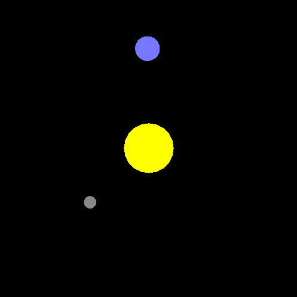
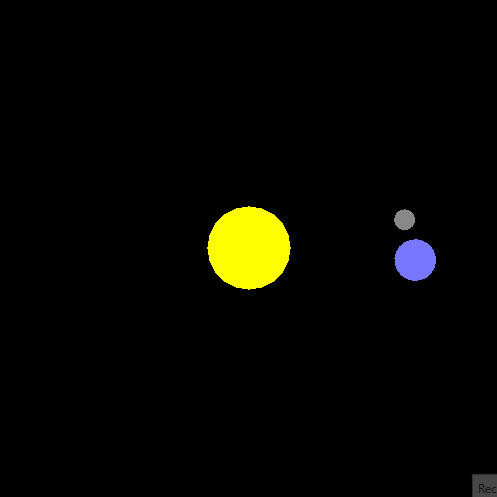

What Are Matrices?
What is a matrix? Well, simply put, matrices are a structured way of grouping numbers together by
creating a rectangular arrangement where each number can be referenced by a an index. They contain
any number of rows and columns (usually denoted as $m$ rows and $n$ columns). So if we have some matrix
$A$ that has dimension $m\times n$ (that is it has $m$ rows and $n$ columns), then we can find
any item in $A$ via $A_{ij}$ for any item at the $i^{th}$ row and $j^{th}$ column.
$$A =
\begin{bmatrix}
a_{11} & a_{12} & ... & a_{1n} \\
a_{21} & a_{22} & ... & a_{3n} \\
... & ... & ... & ... \\
a_{m1} & a_{m2} & ... & a_{mn} \\
\end{bmatrix}$$
That's pretty abstract so let's take an example with a $4\times 4$ matrix. In the following example
if we want to find the element at the third row and second column we would find:
$A_{32} = 3$
.
$$A =
\begin{bmatrix}
9 & 2 & 3 & 47 \\
9 & 3 & 8 & 81 \\
1 & 3 & 4 & 2 \\
5 & 32 & 55 & 0 \\
\end{bmatrix}$$
In code there are multiple ways that we could represent an $m\times n$ matrix, but there are two main
ways: 1) using one single array of size $m * n * size\ of\ element$ or 2) using an array of $m$ arrays of
$n * size\ of\ element$. Both have their uses, but we will use the first method to represent our matrices,
and all arrays start a 0 in the code, but the matrices will be starting at 1.
Matrix Basics
Now that we've see what a matrix is, we need to define a few operations and standard matrices. Let's
by defining two standard matrices that will be necessary for some of the operations: the Identity
Matrix and the Zero Matrix (also called the zero vector). The identity matrix is to matrices
what the number 1 is to real numbers. That is that any matrix multiplied by the identity matrix will not
change the original matrix, and it is defined by as an $m\times m$ matrix where every element on the
diagonal is 1 and every other element is 0 and is denoted as $I$. So in a $4\times 4$ matrix it looks like:
$$I =
\begin{bmatrix}
1 & 0 & 0 & 0 \\
0 & 1 & 0 & 0 \\
0 & 0 & 1 & 0 \\
0 & 0 & 0 & 1 \\
\end{bmatrix}$$
The zero matrix is exactly what it sounds like, a matrix where every element is 0. This matrix can be
added to any other matrix and not change the original matrix. It is denoted as $O$ and
in $4\times 4$ looks like:
$$O =
\begin{bmatrix}
0 & 0 & 0 & 0 \\
0 & 0 & 0 & 0 \\
0 & 0 & 0 & 0 \\
0 & 0 & 0 & 0 \\
\end{bmatrix}$$
- Addition and Subtraction
Addition and subtraction function identically so I'll just cover addition here. Addition for matrices
is the same as adding two vectors together. All you have to do is add the components from both
matrices at each index together. It is important to note that addition is associative and commutative;
meaning that order doesn't matter and direction doesn't matter =>
$(A + B) + C = A + (B + C)$
and
$A + B = B + A$
.
So let's take a look at an example with two $4\times 4$ matrices $A$ and $B$.
$$Let\ A =
\begin{bmatrix}
9 & 2 & 3 & 47 \\
9 & 3 & 8 & 81 \\
1 & 3 & 4 & 2 \\
5 & 32 & 55 & 0 \\
\end{bmatrix},
B =
\begin{bmatrix}
2 & 2 & 3 & 1 \\
1 & 83 & 8 & 7 \\
54 & 73 & 47 & 2 \\
9 & 32 & 55 & 44 \\
\end{bmatrix}$$
$$\Rightarrow A + B =
\begin{bmatrix}
9 + 2 & 2 + 2 & 3 + 3 & 47 + 1\\
9 + 1 & 3 + 83 & 8 + 8 & 81 + 7 \\
1 + 54 & 3 + 73 & 4 + 47 & 2 + 2 \\
5 + 9 & 32 + 32 & 55 + 55 & 0 + 44 \\
\end{bmatrix}$$
$$= \begin{bmatrix}
11 & 4 & 6 & 48\\
10 & 86 & 16 & 88 \\
55 & 76 & 51 & 4 \\
14 & 64 & 110 & 44 \\
\end{bmatrix}$$
- Scalar Multiplication
Scalar multiplication for matrices is the same as scalar multiplication for vectors. To multiply
a matrix by a scalar just multiply the scalar to each component. One thing to note is that scalar
multiplication is both associative and commutative =>
$(cd)A = c(dA)$
and
$cA = Ac$
. Now let's take a look at an example with a $4\times 4$ matrix $A$ and a scalar $c$.
$$Let\ A =
\begin{bmatrix}
9 & 2 & 3 & 47 \\
9 & 3 & 8 & 81 \\
1 & 3 & 4 & 2 \\
5 & 32 & 55 & 0 \\
\end{bmatrix},
c = 3$$
$$\Rightarrow cA =
\begin{bmatrix}
3 \cdot 9 & 3 \cdot 2 & 3 \cdot 3 & 3 \cdot 47 \\
3 \cdot 9 & 3 \cdot 3 & 3 \cdot 8 & 3 \cdot 81 \\
3 \cdot 1 & 3 \cdot 3 & 3 \cdot 4 & 3 \cdot 2 \\
3 \cdot 5 & 3 \cdot 32 & 3 \cdot 55 & 3 \cdot 0 \\
\end{bmatrix}$$
$$= \begin{bmatrix}
27 & 6 & 9 & 141 \\
27 & 9 & 24 & 243 \\
3 & 9 & 12 & 6 \\
15 & 96 & 165 & 0 \\
\end{bmatrix}$$
Matrix Vector Multiplication
Up until now operations on matrices have looked basically the same as they do for vectors. However,
matrix multiplication is not nearly as simple as just multiplying the numbers at each index for the
two matrices. To begin and help form an understanding how we define matrix multiplication
th way we do, we'll start with matrix vector multiplication. In order to to multiply a vector by a
matrix (i.e. matrix * vector), the vector must be of the same dimension of the $n$ columns. This is
because of how we are going to define multiplication in this space. We define it by saying if
$A$ is an $m\times n$ matrix and $\vec v$ is an $n$ dimensional vector then the result
of $A\vec v$ is an m dimensional vector $\vec u$ such that each
element of $\vec u$ is equal to the dt product of $\vec v$ and the $i^{th}$
row of $A$. It is SUPER IMPORTANT to remember that matrix vector multiplication is
NOT commutative, so =>
$A\vec v \neq \vec vA$
. In fact because of the way we defined it, doing $\vec vA$ doesn't even
make any sense. Now that we have a definition let's take a look at an example with a $4\times 4$
matrix and a $4$ dimensional vector to help explain and understand what that means.
$$Let\ A =
\begin{bmatrix}
1 & 2 & 3 & 1 \\
4 & 0 & 8 & 8 \\
1 & 3 & 4 & 2 \\
5 & 0 & 6 & 0 \\
\end{bmatrix},
\vec v = \langle1, 2, 3, 1\rangle
= \begin{bmatrix}
1 \\
2 \\
3 \\
1 \\
\end{bmatrix}$$
$$\Rightarrow A\vec v =
\begin{bmatrix}
1 & 2 & 3 & 1 \\
4 & 0 & 8 & 8 \\
1 & 3 & 4 & 2 \\
5 & 0 & 6 & 0 \\
\end{bmatrix}
\begin{bmatrix}
3 \\
0 \\
1 \\
4 \\
\end{bmatrix}$$
$$= \begin{bmatrix}
1 \cdot 3 + 2 \cdot 0 + 3 \cdot 1 + 1 \cdot 4 \\
4 \cdot 3 + 0 \cdot 0 + 8 \cdot 1 + 8 \cdot 4 \\
1\cdot 3 + 3 \cdot 0 + 4 \cdot 1 + 2 \cdot 4 \\
5 \cdot 3 + 0 \cdot 0 + 6 \cdot 1 + 0 \cdot 4 \\
\end{bmatrix}
=
\begin{bmatrix}
10 \\
52 \\
15 \\
20 \\
\end{bmatrix}$$
Some pseudo code for this looks something like: (assuming that we are using a singular array to represent
our $4\times 4$ matrix).
// This function is part of the Matrix4 class
function multiplyVector(v) {
Make sure this matrix can be multiplied by v // is a 4D vector
Get each row from this matrix and turn it into a Vector4
Dot v with each row and store the results in a new Vector4 and return it
}
Matrix Matrix Multiplication
We just learned how to multiply a matrix by a vector, but how about a matrix with another matrix?
Well, one thing to point out is that a vector is also a matrix. In our example before we multiplied
a $4\times 4$ matrix with a $4\times 1$ matrix resulting in another $4\times 1$ matrix. So if we think more
generally about what a matrix is, we can think of each column itself as a vector, or a column vector.
Now in order to multiply an $m\times n$ matrix $A$ with an $n\times l$ matrix $B$ (i.e. $AB$)
we can get the resulting $m\times l$ matrix by taking the first row of $A$ and dotting it with each
column vector from $B$ and repeat that with each row in $A$. Again this is
a rather abstract and confusing definition so we'll take a look at an example in just a minute. For the
most part all of the matrix matrix multiplications we'll be handling will be between two square matrices,
so if they are the same size then they can be multiplied. It is SUPER IMPORTANT to remember that
matrix matrix multiplication is NOT commutative, so =>
$AB \neq BA$
. However, it is associative so =>
$A(BC) = (AB)C$
. Now let's take a look at an example with two $4\times 4$ matrices.
$$Let\ A =
\begin{bmatrix}
1 & 2 & 3 & 1 \\
4 & 0 & 1 & 4 \\
1 & 3 & 4 & 2 \\
3 & 0 & 2 & 0 \\
\end{bmatrix},
B =
\begin{bmatrix}
0 & 2 & 3 & 1 \\
4 & 1 & 1 & 2 \\
1 & 3 & 4 & 2 \\
0 & 2 & 1 & 0 \\
\end{bmatrix}$$
$$\Rightarrow AB =$$
$$\begin{bmatrix}
1 \cdot 0 + 2 \cdot 4 + 3 \cdot 1 + 1 \cdot 0 & 1 \cdot 2 + 2 \cdot 1 + 3 \cdot 3 + 1 \cdot 2 &
1 \cdot 3 + 2 \cdot 1 + 3 \cdot 4 + 1 \cdot 2 & 1 \cdot 1 + 2 \cdot 2 + 3 \cdot 2 + 1 \cdot 0 \\
4 \cdot 0 + 0 \cdot 4 + 1 \cdot 1 + 4 \cdot 0 & 4 \cdot 2 + 0 \cdot 1 + 1 \cdot 3 + 4 \cdot 2 &
4 \cdot 3 + 0 \cdot 1 + 1 \cdot 4 + 4 \cdot 2 & 4 \cdot 1 + 0 \cdot 2 + 1 \cdot 2 + 4 \cdot 0 \\
1 \cdot 0 + 3 \cdot 4 + 4 \cdot 1 + 2 \cdot 0 & 1 \cdot 2 + 3 \cdot 1 + 4 \cdot 3 + 2 \cdot 2 &
1 \cdot 3 + 3 \cdot 1 + 4 \cdot 4 + 2 \cdot 2 & 1 \cdot 1 + 3 \cdot 2 + 4 \cdot 2 + 2 \cdot 0 \\
3 \cdot 0 + 0 \cdot 4 + 2 \cdot 1 + 0 \cdot 0 & 3 \cdot 2 + 0 \cdot 1 + 2 \cdot 3 + 0 \cdot 2 &
3 \cdot 4 + 0 \cdot 1 + 2 \cdot 4 + 0 \cdot 2 & 3 \cdot 1 + 0 \cdot 2 + 2 \cdot 2 + 0 \cdot 0 \\
\end{bmatrix}$$
$$=
\begin{bmatrix}
11 & 15 & 18 & 11 \\
1 & 19 & 20 & 6 \\
16 & 21 & 24 & 15 \\
2 & 12 & 17 & 7 \\
\end{bmatrix}$$
The pseudocode for how I implemented this function looks like this:
function multiply(rightSideMatrix) {
Get a new FloatArray of length 16 to store result
for (i -> 16) {
Get the index offset for rsm i % row length // tells us if we are on a new row as well
if (We are on a new row) {
Set the row vector to the current row
}
Get the current column from rsm using the offset index
Set the result at i to the dot product of row and column
}
Assign the result array to this matrix and return it
}
Transformations
There are two main types of transformations we will be dealing with: Linear and
Affine. Linear transformations are transformations that map between vector spaces
preserving vector addition and scalar multiplication. That means that they change how we see vectors
in some way, and they are guaranteed to preserver the origin, lines, parallelism, and ratio of
distances. These transformations are useful for things like, scaling and rotating, but they don't
allow for us to do translations! So how do we move stuff around on the screen then? We use affine
transformations. Affine transformations are a super-set of Linear transformations with one key
difference: the origin may not be preserved. This allows for translations! Now, since we are working
in $3D$ space why have I been doing examples with $4\times 4$ matrices? It's because of something called
Homogenous Coordinates. Homogeneous coordinates allow us to add another dimension
"homogeneously" and allow for us to represent All of our necessary transformations
using a singular sized matrix $(4\times 4)$. This $4_{th}$ "dimension" usually called $w$ is not
a spatial dimension, but can effect the scaling of images, so we will use it to represent wether or not
we are using our Vector4 to is a point $(w = 1)$ or a vector $(w = 0)$. The reasoning for a vector
to have a homogenous coordinate of $0$ is because they are Relative; they are a
displacement defined in a reference frame thus being able to move their "origin" wouldn't make sense.
Affine Transformation Leaf

Types of Affine Transformations

1) Scaling
Scaling is a type of linear transformation where a vector or point can be scaled in any of the
$x$, $y$, or $z$ directions by some scalar values $x$, $y$, and $z$.
Scaling

The $4\times 4$ matrix that allows for a point or vector to be scaled in $3D$ space is the
diagonal matrix defined below.
$$S =
\begin{bmatrix}
x & 0 & 0 & 0 \\
0 & y & 0 & 0 \\
0 & 0 & z & 0 \\
0 & 0 & 0 & 1 \\
\end{bmatrix}$$
2) Rotation
Rotations are a type of linear transformation that allow a vector or a point to rotated around
and axis; they allow the vector/point to have the it's basis vectors changed and be facing
in a new direction.
Rotation

For performing rotations we will be using what are known as Euler Angles. They are a set of three
angles, often denoted with $\phi$, $\theta$ , & $\psi$ or $roll$, $pitch$, & $yaw$ that can be
used to describe any rotation in $3D$ space. The order in which the rotations are performed does
mater as each successive rotation will alter any following rotations.
Euler Angles

One drawback to defining our reference frame with Euler angles is that it is possible for more
than one of the rotations to be locked in the same axial plane, and therefore losing a degree of
freedom (or a posibile direction of movement). This phenomenon is called a Gimbal Lock.
Gimbal Lock

Each one of these rotations can be expressed a rotation matrix based on some input angle. For the
following $4\times 4$ matrices let's assume the rotation around the $z-axis$ will be by some
angle $\phi$, the $x-axis$ by $\theta$, and the $y-axis$ by $\psi$.
$$R_x =
\begin{bmatrix}
1 & 0 & 0 & 0 \\
0 & cos\theta & -sin\theta & 0 \\
0 & sin\theta & cos\theta & 0 \\
0 & 0 & 0 & 1 \\
\end{bmatrix}$$
$$R_y =
\begin{bmatrix}
cos\psi & 0 & sin\psi & 0 \\
0 & 1 & 0 & 0 \\
-sin\psi & 0 & cos\psi & 0 \\
0 & 0 & 0 & 1 \\
\end{bmatrix}$$
$$R_z =
\begin{bmatrix}
cos\phi & -sin\phi & 0 & 0 \\
sin\phi & cos\phi & 0 & 0 \\
0 & 0 & 1 & 0 \\
0 & 0 & 0 & 1 \\
\end{bmatrix}$$
3) Translation
Translation is an affine transformation that moves a vector or point a constant distance in physical
space.
In three dimensions it can be thought of as moving the point or vector along the $x-axis$ by $x$,
$y-axis$ by $y$, and $z-axis$ by $z$.
Translation

The $4\times 4$ matrix representation for $3D$ space is defined as the following diagonal matrix.
$$T =
\begin{bmatrix}
1 & 0 & 0 & x \\
0 & 1 & 0 & y \\
0 & 0 & 1 & z \\
0 & 0 & 0 & 1 \\
\end{bmatrix}$$
4) Perspective Projection
Perspective Projection is a transformation that squished $3D$ objects down into a $2D$ plane.
It takes lines that are parallel in the $3D$ reference frame and causes them to all approach
a single vanishing point. It produces realistic views, but it doesn't preserve the object
proportions or relative dimensions.
Perspective Projection

We can do this by creating a bounding box, or frustum,
around the scene. This box will contain a a top, bottom, left, right, front, and back. We
will also need a vertical field of view help us calculate where the top (and therefore bottom)
planes are situated. We will also need an aspect ratio for the scene which defines a ratio of
the ${width}\frac{height}$. From this and the top we can calculate the distance of the right
(and therefore left) walls.
Perspective Projection Reference Frame

The $4\times 4$ matrix representation of this projection is defined below.
$$P =
\begin{bmatrix}
\frac{near}{right} & 0 & 0 & 0 \\
0 & \frac{near}{top} & 0 & 0 \\
0 & 0 & - \frac{far\ +\ near}{far\ -\ near} & -2 \frac{far\ \cdot \ near}{far\ -\ near} \\
0 & 0 & -1 & 0 \\
\end{bmatrix}$$
5) Orthographic Projection
Orthographic Projection is a form of parallel projection in which all the projection lines are
orthogonal (perpendicular) to the projection plane. This projection maintains relative dimensions.
This projection can be broken down into three pieces. First we want to center the viewing volume
around the origin by translating it half of the length in each direction. We also need to
multiply each distance by $-1$ to conform to the right-hand rule.
$$T =
\begin{bmatrix}
1 & 0 & 0 & -\frac{left\ +\ right}{2} \\
0 & 1 & 0 & -\frac{bottom\ +\ top}{2} \\
0 & 0 & 1 & \frac{near\ +\ far}{2} \\
0 & 0 & 0 & 1 \\
\end{bmatrix}$$
The second transformation is to scale the viewing volume and remap said volume to be bounded
all around by the range $[-1,\ 1]$.
$$S =
\begin{bmatrix}
\frac{2}{right\ -\ left} & 0 & 0 & 0 \\
0 & \frac{2}{top\ -\ bottom} & 0 & 0 \\
0 & 0 & \frac{2}{far\ -\ near} & 0 \\
0 & 0 & 0 & 1 \\
\end{bmatrix}$$
The third and final transformation we need to make is to switch from a right-handed to a
left-handed coordinate system by switching the direction of the $z-axis$ and reflecting
across the $xy-plane$.
$$R =
\begin{bmatrix}
1 & 0 & 0 & 0 \\
0 & 2 & 0 & 0 \\
0 & 0 & -1 & 0 \\
0 & 0 & 0 & 1 \\
\end{bmatrix}$$
The final matrix transformation is defined as the following composite of the three previous
matrices.
$$RST =
\begin{bmatrix}
1 & 0 & 0 & 0 \\
0 & 2 & 0 & 0 \\
0 & 0 & -1 & 0 \\
0 & 0 & 0 & 1 \\
\end{bmatrix}
\begin{bmatrix}
\frac{2}{right\ -\ left} & 0 & 0 & 0 \\
0 & \frac{2}{top\ -\ bottom} & 0 & 0 \\
0 & 0 & \frac{2}{far\ -\ near} & 0 \\
0 & 0 & 0 & 1 \\
\end{bmatrix}
\begin{bmatrix}
1 & 0 & 0 & -\frac{left\ +\ right}{2} \\
0 & 1 & 0 & -\frac{bottom\ +\ top}{2} \\
0 & 0 & 1 & \frac{near\ +\ far}{2} \\
0 & 0 & 0 & 1 \\
\end{bmatrix}$$
$$=
\begin{bmatrix}
\frac{2}{right\ -\ left} & 0 & 0 & -\frac{right\ +\ left}{right\ -\ left} \\
0 & \frac{2}{top\ -\ bottom} & 0 & -\frac{top\ +\ bottom}{top\ -\ bottom} \\
0 & 0 & -\frac{2}{far\ -\ near} & -\frac{far\ +\ near}{far\ -\ near} \\
0 & 0 & 0 & 1 \\
\end{bmatrix}$$
Earth, Moon, Sun Rotation
The last piece of the coding homework for this week was to model the moon orbiting the Earth,
which in turn was orbiting the Sun. We were given a a matrix representing the total transformation
being performed on the Earth, the offset from earth, and the angle of rotation. In order to
do this we need to rotate the moon around the $z-axis$ (since we are living in the $xy-plane$)
and translate the moon away from the Earth. Below is some pseudo code of how to implement it.
function createMoonMatrix(currentRotationAngle, offsetFromEarth, earthTransform) {
Create a Matrix4 to hold the moons transformation
Create a rotation matrix around the z axis with currentRotationAngle
Create a translation matrix with offsetFromEarth in the x and y directions and 0 in the z
Multiply the moon matrix by earthTransform
Multiply the moon matrix by the rotation matrix
Multiply the moon matrix by the translation matrix and return it
}
WEEEEEEEEEE!
This was multiplied in reverse order.

That looks more like what we wanted!
